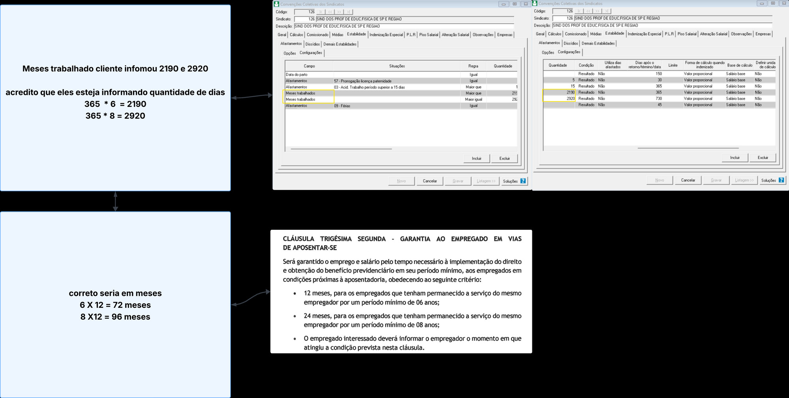
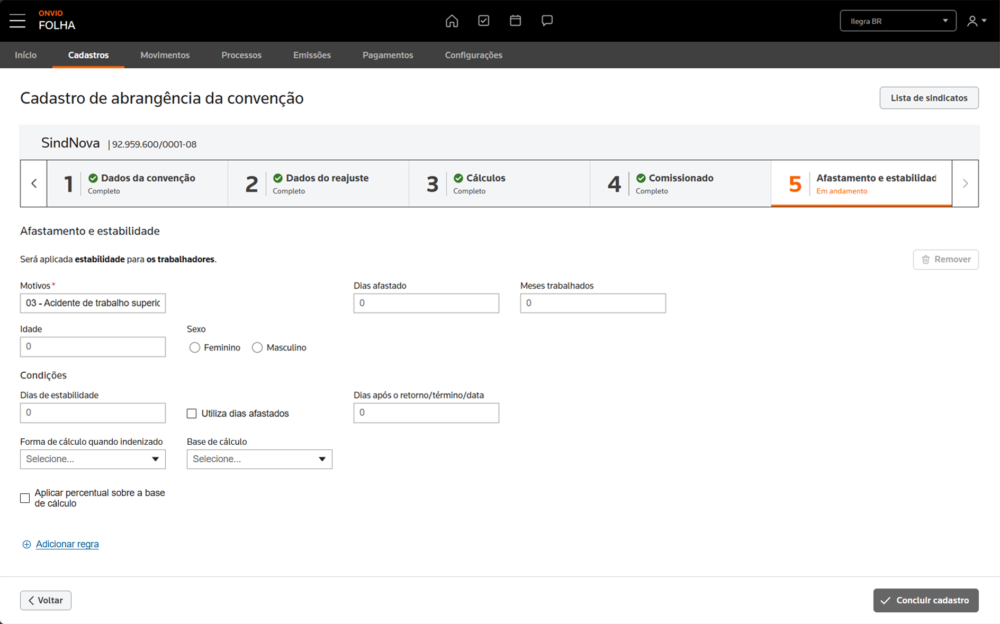

Estabilidade por Convenção Coletiva
Implementar a configuração de cadastro de estabilidade na área de sindicato, a partir da convenção coletiva vigente.
O usuário precisa ter a autonomia de cadastrar uma estabilidade "personalizada" de acordo com o que foi definido em convenção, abrangendo diversos motivos e condições.
No legado, a partir do SQL e acesso a alguns clientes, foi verificado pelo produto que os clientes estão aplicando as regras de forma errada de acordo com a definição do documento da convenção coletiva. Desta forma, será necessário colocar algumas salvaguardas e restrições para que o usuário não gere tantos cadastros errados.
A demanda partiu da necessidade de centralizar o cadastro de períodos de estabilidade — situações em que o colaborador não pode ser demitido, como acidente de trabalho (12 meses), gravidez e regras específicas de convenção/acordo coletivo. No legado, o lançamento fica em "Processo → Estabilidade", com campos pulverizados entre "Demais estabilidades" e "Configuração", sem padronização entre afastamentos, motivos legais e regras de convenção.
Pontos-chave que evidenciaram o problema
- Cadastros pulverizados entre múltiplas telas (lançamento manual + histórico em locais diferentes)
- Campos de "Demais estabilidades" (campo, regra, quantidade, condição, dias) precisam ser unificados com a Configuração
- Falta critério para combinar dimensões: Sexo × Idade × Meses trabalhados — clientes aplicam de formas diferentes
- Operadores (≥ ou =) precisam ser configuráveis por regra/cliente (ex.: convenção metalúrgica)
Checklist de sinais de que a decisão era necessária
- ❌ Cadastro disperso entre múltiplas telas no legado
- ❌ Sem padronização de campos entre afastamento, motivo e convenção
- ❌ Não há documentação consolidada sobre a lógica atual
- ✅ Dados SQL e acesso a clientes disponíveis para priorizar motivos mais usados

Após reorganizar a lógica que foi aplicada no Legado, para entender quais campos são identificadores e quais são condicionais, foi desenvolvido com Claude, o layout do cadastro da estabilidade por convenção coletiva. A intenção é diminuir os erros dos usuários identificados no Legado.
A lógica consiste em, setar as informações bases, começando pelo "Motivo", definir a quantidade de dias afastado, se terá uma quantidade mínima de meses trabalhados, se terá idade e sexo. E então, aplicas as condições que configurarão os dias de estabilidade, e o pagamento quando necessário, como quantidade de dias de estabilidade, se utiliza a quantidade de dias afastados como base, e as formas de cálculo da indenização.
A visualização no formato de formulário é mais estruturada, e direciona melhor os usuários, já que os campos são mostrados em uma divulgação progressiva, em que só aparecem os necessários para o tipo de motivo selecionado. Implementando uma frase explicativa sobre a regra que está sendo aplicada, para não ficar ambíguo o resultado esperado.

1. Visibilidade do status do sistema
Etapas numeradas com rótulos "Completo/Em andamento" deixam claro o progresso do cadastro e onde a pessoa está na jornada.
Botões "Voltar" e "Concluir cadastro" indicam próximos passos e fechamento.
2. Correspondência entre o sistema e o mundo real
Vocabulário do domínio trabalhista ("Motivos", "Dias afastado", "Meses trabalhados", "Sexo", "Condições") conversa com o que foi descrito na reunião (ex.: estabilidade por acidente, gravidez).
Agrupamentos por seção ("Afastamento e estabilidade" e "Condições") espelham o raciocínio do usuário ao configurar regras.
3. Controle e liberdade do usuário
Ação "Remover" visível para descartar itens.
Link "Adicionar regra" permite construir regras de forma incremental.
4. Consistência e padrões
Padrões de formulário coesos: campos alinhados, radio para sexo, listas com "Selecione…", ícone consistente no botão primário.
Indicação de campo obrigatório com "*" (Motivos).
5. Prevenção de erros
Uso de dropdown para "Motivos" evita valores inválidos.
Campos numéricos separados (dias, meses, idade) reduzem ambiguidade de entrada.
6. Reconhecimento em vez de memorização
Placeholders e rótulos explícitos reduzem carga de memória.
Opção de "Aplicar percentual sobre a base de cálculo" como checkbox torna a regra "explícita", sem exigir lembrar configurações escondidas.
7. Estética e design minimalista
Boa hierarquia visual, espaçamento e poucos elementos concorrendo pela atenção, o que facilita a leitura de uma tarefa complexa.
8. Ajuda no diagnóstico e recuperação de erros
Separação por seções e controles discretos facilitam localizar onde ajustar quando algo "não fecha".
—
A demanda de Estabilidade foi pausada devido à reorganização das prioridades do produto e das demais demandas da Folha. Por esse motivo, não houve defesa oficial junto ao Produto.
Título da demanda
—
—
—
—
—
—
—
—
—
Título da demanda
—
—
—
—
—
—
—
—
—